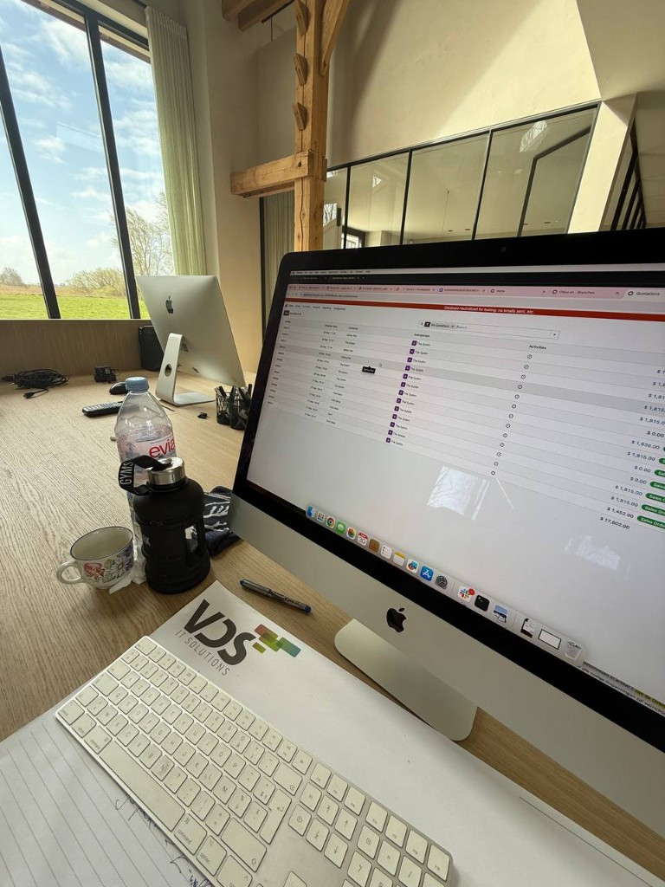
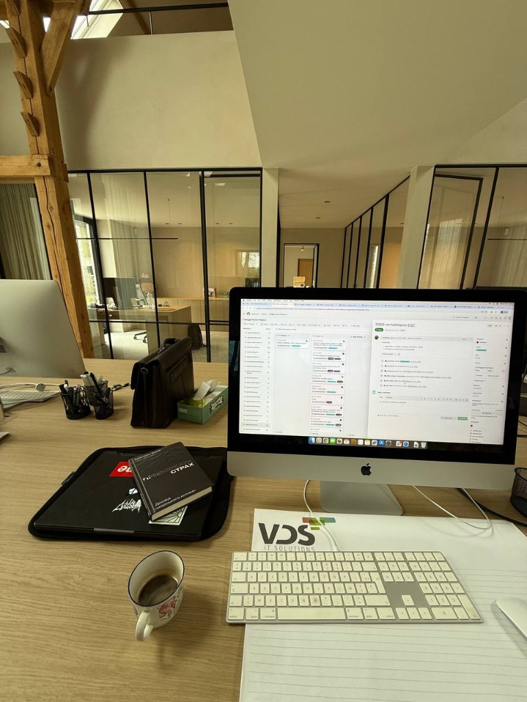

Internship — Droggol (Applix)
During my final-year internship at Droggol (Applix), a Belgian Odoo integrator, I worked as a Functional Analyst intern — combining client-facing functional analysis with hands-on AI development. My role involved supporting project managers, contributing to Odoo implementations for clients, and designing functional specifications for ERP systems.

Day-to-day work in Odoo — functional flows on neutralised test databases before go-live.
Functional analysis in practice
ERP work is rarely “only code.” You sit between business language and system behaviour: workshops, gap analysis, write-ups that developers can implement, and validation on staging environments. At Applix that meant staying close to Odoo modules clients actually use — sales, helpdesk, inventory — and making sure specs are testable, not wish lists. Supporting PMs taught me how delivery timelines, scope, and client expectations shape every technical decision.

Engineering coordination — tickets and repos that fed the search project.
AI project — multi-repository semantic search
As my main technical project, I designed and built an AI-powered internal search engine that indexes GitHub tickets from 90+ Odoo repositories used by Applix. The goal was simple to state and hard to ship: consultants and developers should find prior art in seconds, not by guessing which repo held a similar bug or feature request.
The application allows developers and consultants to:
- Semantically search across all repositories or within a specific one, using natural language queries
- Browse tickets per repository and toggle between an AI-generated LLM summary and the original GitHub issue body
- Access direct links to the original GitHub issue and any linked Odoo helpdesk ticket
Under the hood, the system uses vector indexing (embeddings via Groq) to represent ticket content, enabling fast, context-aware retrieval — effectively a multi-repository RAG (Retrieval-Augmented Generation) application built for internal engineering use. Ingestion, chunking, and keeping indices in sync with live repos were as important as the chat-style query UI: stale search is worse than no search.
What I took away
The internship bridged two worlds I want to keep: clarity for humans (functional specs, client communication) and systems that scale knowledge (semantic search over years of tickets). It also reinforced security and hygiene — internal tools still touch production-adjacent data, API keys, and GitHub access boundaries. I am grateful for a team that treated an intern as someone who could own a real internal product, not only shadow meetings.